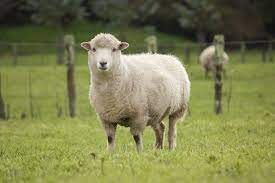
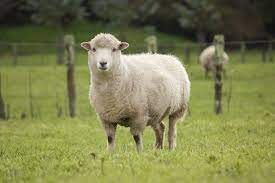

⇝ 我叫张祺殷，第三个字念yàn不是yīn。从小大家都爱念错我的名字，但也不是他们的错，是我的父母太会取名字了，才会让我时常被叫错名字。
⇝ 我今年（2021年）18岁，与众多优秀的高三生们一样，正在向着自己的梦想前进（应该吧）。
⇝ 我生日是2003年7月21日，巨蟹座  ，属羊 。
，属羊 。
⇝ 我的爱好有很多。最主要的一个是打乒乓 。它陪我度过了很多的岁月，丰富了我的中学生涯。让我认识了很多很好的队友，让我学到了很多的人生道理。让我能保持苗条不当个肥仔，让我对自己更有自信觉得自己也有一门技巧其他人没有的。嗯，就真的很爱很爱就对了。
⇝ 我也很喜欢吃美食 ，吃美食能让我暂时忘记所有烦恼，让我特别快乐。此外，看英文书籍 和看英文电影 也是我的爱好之一。
⇝ 疫情期间，音乐也变成我必不可少的一样东西。Alec benjamin  和 Billie Eilish
和 Billie Eilish  是我最爱的两位歌手。等未来有机会我一定要亲自去他们的演唱会我人生才会圆满。
是我最爱的两位歌手。等未来有机会我一定要亲自去他们的演唱会我人生才会圆满。
⇝ 我性格多变，有时会搞自闭，有时会放飞自我。取决于我当天的心情和当天面临的情况。我脾气挺差，特别是与家人相处的时候，应该是被他们宠坏了，哈哈。
⇲ 未来呢，我希望统考能考到理想的成绩，然后考上我想要的大学，想要的科系。
⇲ 再来呢，希望我的大学生活能够充充实实的，认识更多志同道合的朋友，敢于去闯，多多去认识外面的世界。
⇲ 当然呢，我也希望我能顺顺利利从大学毕业，成功找到一份工来养活自己就够了。
⇲ 总而言之呢，就是能有一个安安稳稳的生活，过上一段再平凡不过的人生，我就满足了。